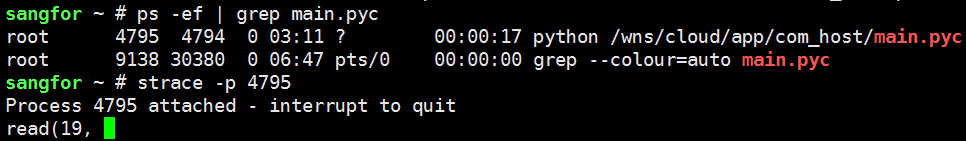
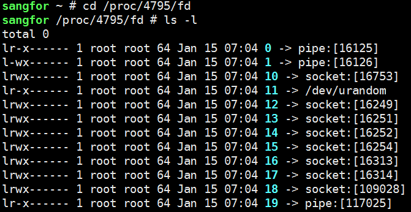

项目实战07线上问题定位之自上而下¶
查看进程下线程和资源占用¶
使用ls /proc/pid/task/ 查看线程
使用ps -eLf命令/ps aux -L/ps aux -el
使用pstree
查看线程数量
cat /proc/19135/status | grep Threads
pstree -p 19135|wc -l
程序状态字段解释¶
D Uninterruptible sleep (usually IO) 不可中断睡眠
R Running or runnable (on run queue) 正在执行或可执行，表示目前在运行队列里面
S Interruptible sleep (waiting for an event to complete) 可中断睡眠
T Stopped, either by a job control signal or because it is being traced.停止
W paging (not valid since the 2.6.xx kernel)
X dead (should never be seen)
Z Defunct (“zombie”) process, terminated but not reaped by its parent.僵尸进程
查看各进程下的线程数情况¶
比如某台服务器的CPU使用率飙升，通过top命令查看是gitlab程序占用的cpu比较大，”ps -ef|grep gitlab”发现有很多个gitlab程序，现在需要查询gitlab各个进程下的线程数情况。批量查询命令如下：
# for pid in $(ps -ef|grep -v grep|grep gitlab|awk '{print $2}');do echo ${pid} > /root/a.txt ;cat /proc/${pid}/status|grep Threads > /root/b.txt;paste /root/a.txt /root/b.txt;done|sort -k3 -rn
查看cpu使用率告警问题处理案例¶
查出这个pid进程的cpu资源各自被哪个线程所占。通过”top -Hp pid”可以查看该进程下各个线程的cpu使用情况；如下：
[root@kevin ~]# top -Hp 31969
# 另方式查看子线程：ps -Lf 31969
通过top命令定位到cpu占用率较高的线程之后，继续使用jstack pid命令查看当前java进程的堆栈状态，这就用到jstack工具！ jstack是java虚拟机自带的一种堆栈跟踪工具。jstack用于打印出给定的java进程ID或core file或远程调试服务的Java堆栈信息。 jstack可以定位到线程堆栈，根据堆栈信息我们可以定位到具体代码，所以它在JVM性能调优中使用得非常多。
程序卡主跟踪¶
继续用strace -p 27678跟踪，发现卡在read，文件描述符是14

现在我们查看一下进程打开的文件描述符14代表什么，pipe文件

其实在这里我们也可以使用lsof来定位，可以看到进程27678打开的FD 14是pipe，这里u代表可读可写，r代表可读
sangfor ~ # lsof -d 14
COMMAND PID USER FD TYPE DEVICE SIZE/OFF NODE NAME
mongod 1907 root 14u REG 251,0 36864 130683 /wns/data/mongodb/db/collection-7--588642557116981989.wt
syslog-ng 3446 root 14u unix 0xffff88012227d800 0t0 40557736 /dev/log
dockerd 4025 root 14u unix 0xffff8800b8d5d800 0t0 13941 /run/docker/libnetwork/a73bd949b5fbb89c2b8bec3b4ac6af0a948a944958c8b037d9e6c9b324b44331.sock
docker-co 9382 root 14u 0000 0,9 0 9553 anon_inode
docker-co 21204 root 14u 0000 0,9 0 9553 anon_inode
python 27678 root 14r FIFO 0,8 0t0 38483750 pipe
也可以直接查看进程27678打开的，可以看到14是pipe
sangfor ~ # lsof -p 27678
COMMAND PID USER FD TYPE DEVICE SIZE/OFF NODE NAME
python 27678 root 0r FIFO 0,8 0t0 30690124 pipe
python 27678 root 1w FIFO 0,8 0t0 30690125 pipe
python 27678 root 2w FIFO 0,8 0t0 30690126 pipe
python 27678 root 3u 0000 0,9 0 9553 anon_inode
python 27678 root 4u 0000 0,9 0 9553 anon_inode
python 27678 root 5u pack 30691718 0t0 unknown type=SOCK_RAW
python 27678 root 6w REG 251,0 76106652 130565 /wns/data/com_host/etc/config/err.log
python 27678 root 7u IPv4 30691716 0t0 TCP Sangfor:53102->Sangfor:42457 (ESTABLISHED)
python 27678 root 8u IPv4 30691717 0t0 TCP Sangfor:42457->Sangfor:53102 (ESTABLISHED)
python 27678 root 9u IPv4 30691731 0t0 TCP db.sdwan:54072->sdwan.io:27017 (ESTABLISHED)
python 27678 root 10u IPv4 30691732 0t0 TCP db.sdwan:54074->sdwan.io:27017 (ESTABLISHED)
python 27678 root 11r CHR 1,9 0t0 30690329 /dev/urandom
python 27678 root 12u IPv4 30719611 0t0 TCP db.sdwan:51404->db.sdwan:37017 (ESTABLISHED)
python 27678 root 13u IPv4 30719610 0t0 TCP db.sdwan:47124->db.sdwan:27017 (ESTABLISHED)
python 27678 root 14r FIFO 0,8 0t0 38483750 pipe
参考¶
如何区分进程和线程ps -eLf：https://www.cnblogs.com/shengulong/p/11498437.html
如何查询一个进程下面的线程数（进程和线程区别）：https://www.cnblogs.com/kevingrace/p/5252919.html
用strace查找进程卡死原因：https://blog.csdn.net/peng314899581/article/details/79064616